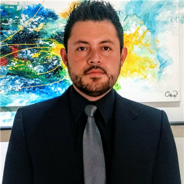
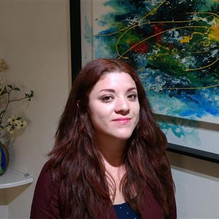

Quienes Somos
Debido a los grandes cambios que se encuentra sufriendo la estructura educativa de nuestro país, así como a las nuevas exigencias educativas que el mercado laboral demanda a nivel global, ha surgido la necesidad de poner especial atención en la formación básica de la población, particularmente en aquellos que tienen dificultades para adaptarse y desarrollarse de conformidad con los programas o estándares formativos internacionales. Con base en esta situación, se ha puesto en marcha la creación de la Asociación Mexicana de Psicología Infantil, organización conformada por un grupo de profesionistas especializados en brindar atención psicológica integral y personalizada a infantes, en el sentido educativo y personal, con la finalidad de otorgarles el apoyo necesario para superar adversidades académico-personales, por medio de técnicas preponderantemente cognitivo-conductuales, las cuales se destacan por tener una práctica sistemática; ser breves y eficientes, y generar resultados permanentes.
Misión
Nuestra misión es implementar estrategias psicológicas eficientes y sencillas que puedan llevarse a cabo tanto en el consultorio, como en el hogar o en el aula escolar, con la finalidad de generar el adecuado desarrollo académico-personal de los infantes.
Visión
Nuestra visión es contribuir, desde la sociedad civil, con la formación de infantes y jóvenes de alto rendimiento académico-personal y de amplia valía moral, otorgándoles el apoyo necesario para afrontar sus principales adversidades y para potencializar sus habilidades motrices y cognitivas. La asociación pretende contribuir con la profesionalización de los mexicanos y de las mexicanas de acuerdo con las exigencias educativas y laborales que demandan los estándares internacionales actuales.

Alan Francisco Osorio Aragón Licenciado....
Actualmente forma parte de la Fundación Lorena Alejandra Gallardo, instituciónencargada de apoyar a los estudiantes de mejor rendimiento académico

Erika Hernández Rosas Licenciada en Psicología
Estudió un diplomado en Violencia Familiar y Derechos Humanos en el Instituto de Investigaciones Jurídicas de la UNAM...

Victoria Arriaga Samayoa Licenciada en Psicología
Participó como ponente en el 7° Congreso Internacional de Psicología en Universidad de las Américas Puebla (UDLAP) con la Temática: “El impacto del acoso sexual a hombres: Significado otorgado y afrontamiento”...

Aylin Alejandra Jiménez López Pasante en Psicología
Realizó prácticas profesionales en el Centro Comunitario "Dr. Julian Macgregor Sánchez Navarro" de la UNAM...
Valores
La Asociación Mexicana de Psicología Infantil se encuentra constituida con base en la cooperación, solidaridad y fraternidad entre los especialistas que la conforman, quienes pretenden lograr los mejores resultados en los infantes en tratamiento, teniendo como eje rector los principios de respeto, transparencia, empatía, familia, tratamiento integral, reciprocidad y honestidad.
Todos los derechos reservados © 2017AMPI